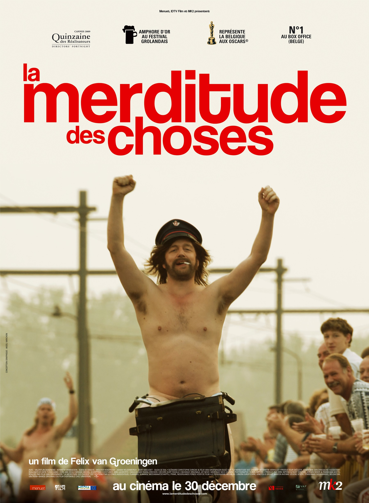

| My Movies | Description |
|---|---|
|  | The Misfortunates (Dutch: De Helaasheid der Dingen, French: La merditude des choses) is a 2009 Belgian comedy-drama film directed by Felix Van Groeningen. It is adapted from the 2006 semi-autobiographical novel of the same name by Belgian writer Dimitri Verhulst. |